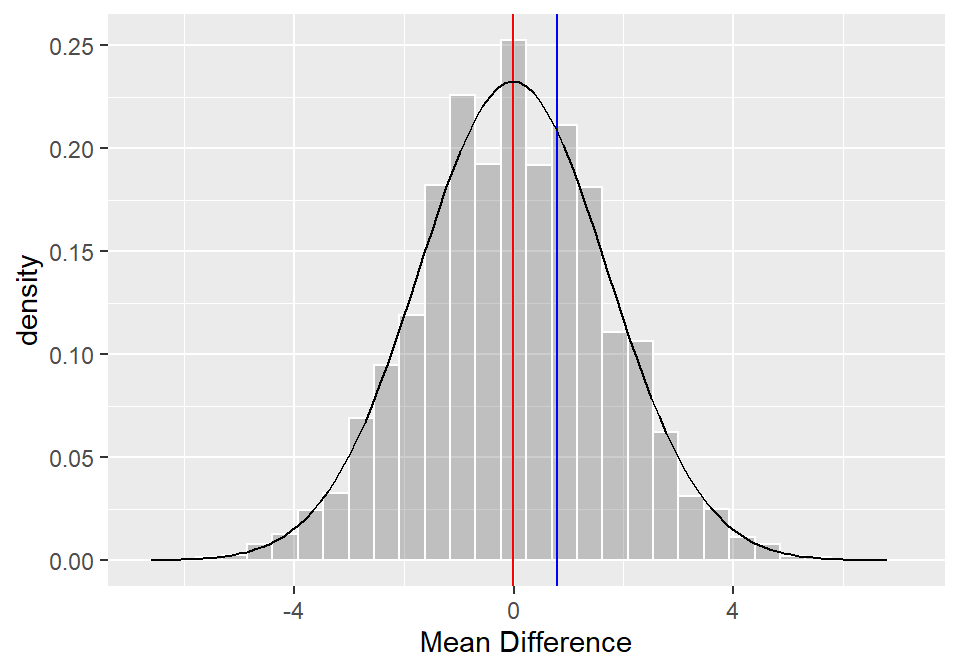

class <- tibble(
ID = paste(rep("ID", 300), 1:300, sep = ""),
grade = round(rnorm(300, 55, 15),0),
teacher = as_factor(sample(c("Umberto", "Tom"), 300, replace = T, prob = (c(.5,.5))))
)
head(class)
# A tibble: 6 x 3
ID grade teacher
<chr> <dbl> <fct>
1 ID1 43 Tom
2 ID2 64 Umberto
3 ID3 37 Umberto
4 ID4 47 Umberto
5 ID5 65 Umberto
6 ID6 52 Tom class %>%
group_by(teacher) %>%
summarise(
mean = round(mean(grade),1)
)
# A tibble: 2 x 2
teacher mean
<fct> <dbl>
1 Tom 54.4
2 Umberto 55.2